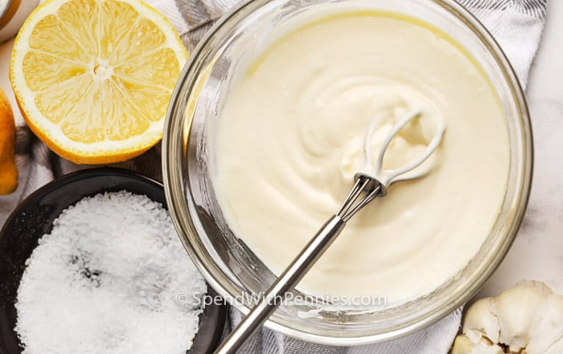

Recipe for Garlic Aioli

Description
Aioli
can be used as a dip, sauce or dressing! It's creamy, flavorful & quick to make!
PREP TIME:
5 mins
COOK TIME:
0 mins
REFRIGERATE TIME:
30 mins
TOTAL TIME:
35 mins
Ingredients
½ cup mayonnaise
1 clove garlic minced
1 tablespoon lemon juice
¼ teaspoon kosher salt
2 teaspoons olive oil
¼ teaspoon pepper
Method
Mix all ingredients in a small bowl to combine.
Refrigerate at least 30 minutes before serving.
Return to Home